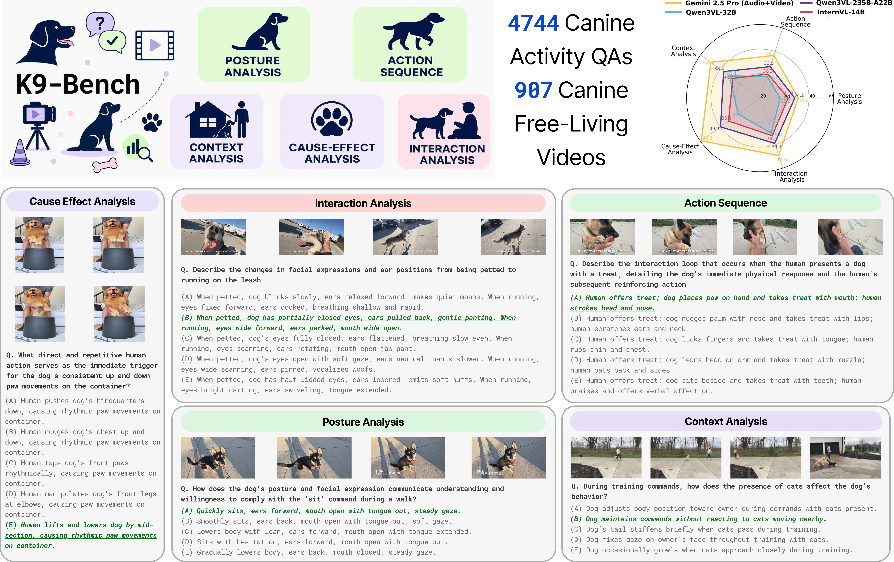
Multimodal Large Language Models (MLLMs) have demonstrated remarkable zero-shot capabilities across diverse inputs such as images, video, audio, and text. A crucial, yet underexplored, application of these models lies in understanding and modeling animal-centric scenarios, especially domesticated animals. As animals are integral to millions of households, benchmarking next-generation AI models on pet-focused tasks, ranging from recognizing distress signals in pets to enabling responsive robotic companions, is essential for building AI systems that can live and work alongside us. We introduce K9-Bench, a novel benchmark focused on real-world videos of domestic dogs, specifically targeting canine action and interaction understanding via ≈5000 question-answer pairs across 907 videos spanning 5 distinct task categories that test long-form, canine-centric multimodal reasoning in MLLMs. To create this dataset, we propose a scalable, VLM/LLM-powered data generation pipeline that automatically mines canine-centric videos from open web sources and curates QA pairs requiring fine-grained, multi-hop reasoning over canine actions and temporally extended interaction sequences. We further propose bias mitigation strategies designed to eliminate biases introduced by VLMs during dataset curation. Through extensive experimentation, we find that frontier MLLMs exhibit limited zero-shot performance on canine-centric tasks: although state-of-the-art closed-source models outperform open-source counterparts, they still struggle with compositional reasoning over subtle posture and interaction cues spread over long horizons. We further observe that generic chain-of-thought prompting provides only modest performance for such long-horizon reasoning. We also conduct human evaluations and checks on a subset to validate the overall dataset quality. Beyond a novel dataset for canine activity analysis, K9-Bench provides a general-purpose dataset construction pipeline that can be adapted to other low-data domains for quantitative analysis.
The benchmark is built upon a structured understanding of canine behavior grounded in established ethological frameworks such as DogFACS (Dog Facial Action Coding System) and canine body language research. By mapping observable visual cues (postures, ear positions, tail movements, etc.) with contextual interactions, we defined five core task categories that evaluate fine-grained, long-horizon multimodal reasoning in MLLMs.
Recognizes coarse poses such as sitting, standing, and lying, as well as fine-grained cues including ear orientation, head tilt, body lowering, tail position, gaze direction, and posture changes across frames.
Requires short-horizon temporal reasoning over ordered action transitions, including gait, posture, movement direction, repeated motion, and general behavioral state.
Interprets changes in canine activity and posture in response to environmental stimuli, unfamiliar objects, spatial constraints, human actions, other animals, or object interactions across disjoint temporal windows.
Links a query event to subsequent changes in body posture, actions, or interaction patterns across multiple video segments, requiring causal reasoning over temporally separated evidence.
Interprets dog--human and dog--dog interactions through visual changes in posture and actions associated with coarse non-verbal communication cues including comfort seeking, play invitations, avoidance or attention seeking.
We developed a scalable pipeline for curating high-quality canine-centric videos and generating QA pairs.
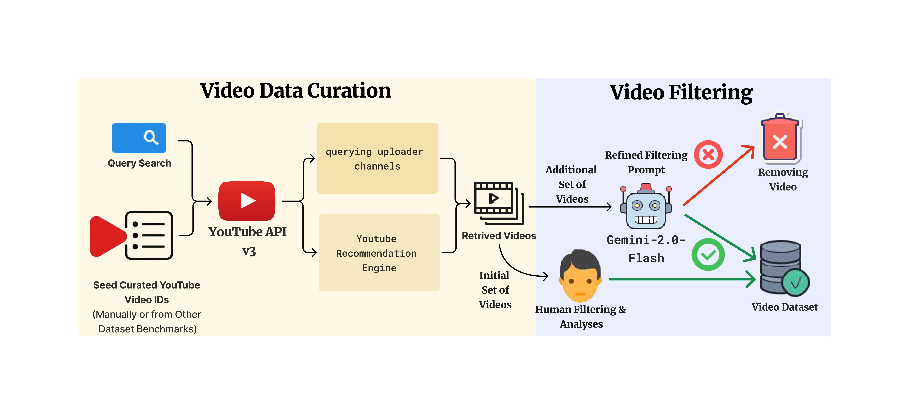
We collected free-living canine videos from YouTube using a semi-automated pipeline involving seed video selection, scalable retrieval via uploader channels and recommendations, followed by rigorous VLM-assisted and human filtering to ensure quality and relevance.
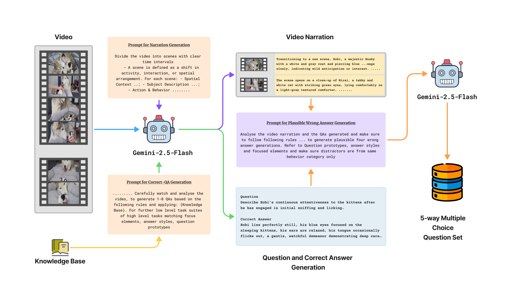
We generate 5-way MCQ pairs using a two-stage process: correct QA generation guided by a structured knowledge base, followed by plausible distractor generation using detailed video narrations to reduce hallucinations.
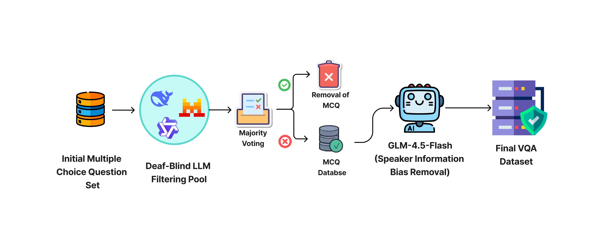
To remove biases from VLM-generated data, we apply deaf-blind LLM filtering and speaker information removal, reducing the dataset to 4,744 high-quality QA pairs across 907 videos.
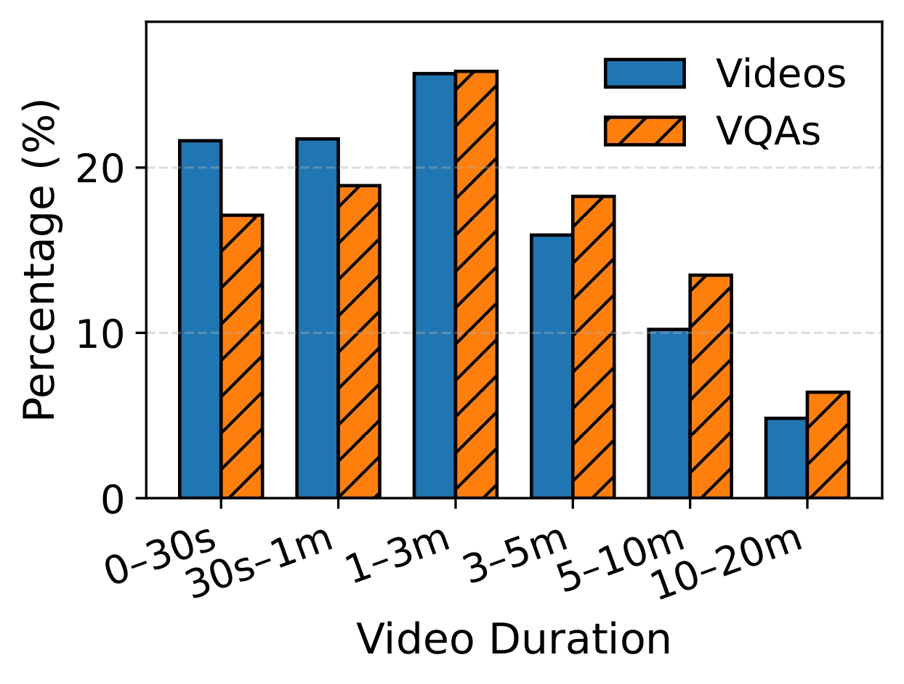
Video VQA Distribution across the dataset.
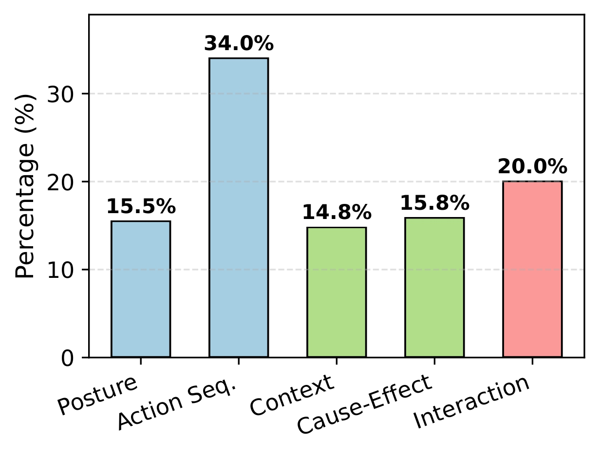
Category distribution in dataset.
We follow a two-stage criterion for free-form response evaluation using text embeddings. We first compute the cosine similarity between the embeddings of the probed model’s generated response and each candidate option, using text embeddings from the Qwen3-Embeddings-8B model. MCQ Accuracy is shown below:
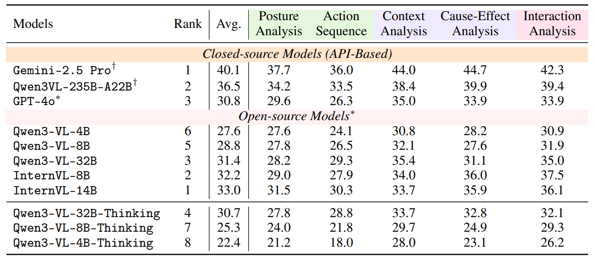
We also present LLM-as-a-Judge evaluations (GPT-4o as judge) in addition to the MCQ-based evals. We evaluate the free-form answers from VLMs across five dimensions: logical consistency, factual correctness, accuracy, conciseness, and overall response quality.
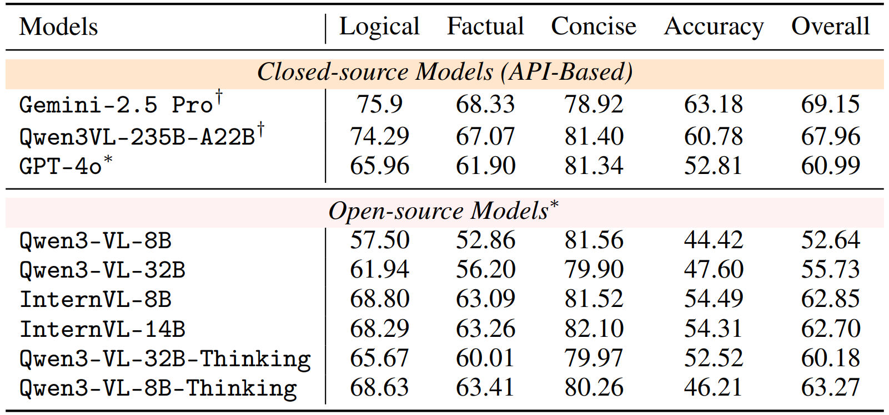
We equip Gemini-2.5 Pro, Qwen3-Omni-Flash, MiMo-V2.5, MiniCPM-4.5-o-9B, Video-SALMONN-2-7B, and OmniVinci-9B with audio inputs to investigate the impact of richer multimodal information on canine-centric video understanding. Adding audio leads to modest improvements in performance, particularly in Action Sequence analysis.
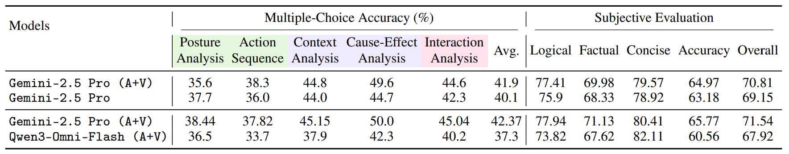
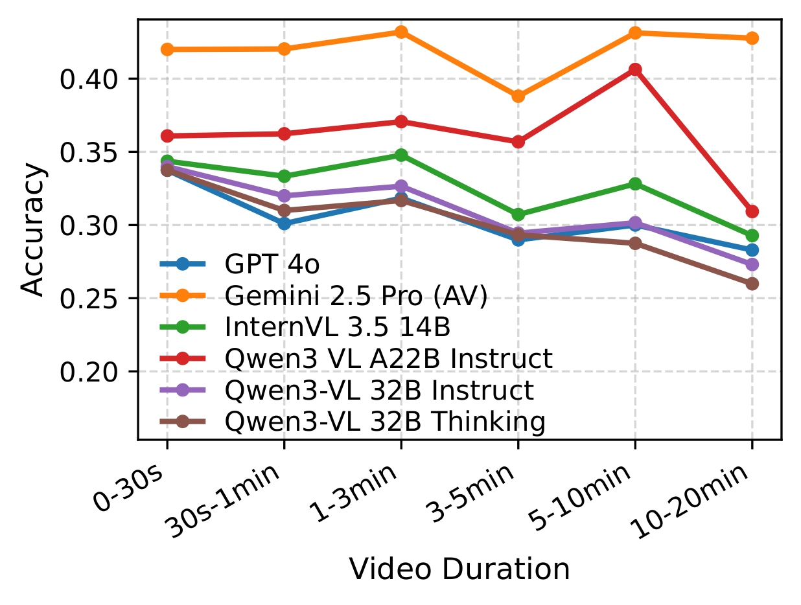
Gemini-2.5 Pro (A+V) maintains strong performance across varying video durations, while other models degrade beyond 3–5 minutes.
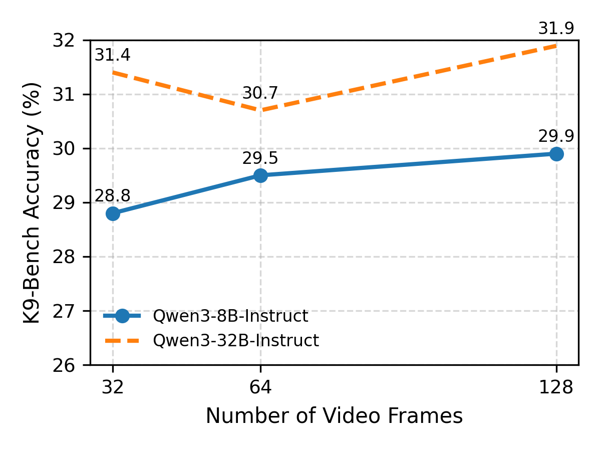
Increasing frames from 32 to 64 gives minor gains. Further increasing frames to 128 performance saturates quickly, highlighting the need for better temporal modeling.
We sincerely thank Aishani Mathur and The Wizard of Dogs for their valuable domain expertise, insights, and guidance in developing the canine behavior trainer-expert knowledge base. Their contributions helped incorporate expert knowledge of canine behavior and training practices into this work.
@article{attarde2026k9bench,
title={K9-Bench: Evaluating Multimodal LLMs on Canine-Centric Videos},
author={Attarde, Khush and Ali, Yusuf and Thukral, Megha and Bhutani, Divye and Ploetz, Thomas and Kira, Zsolt},
journal={arXiv preprint arXiv:2607.02680},
year={2026},
url={https://arxiv.org/abs/2607.02680}
}